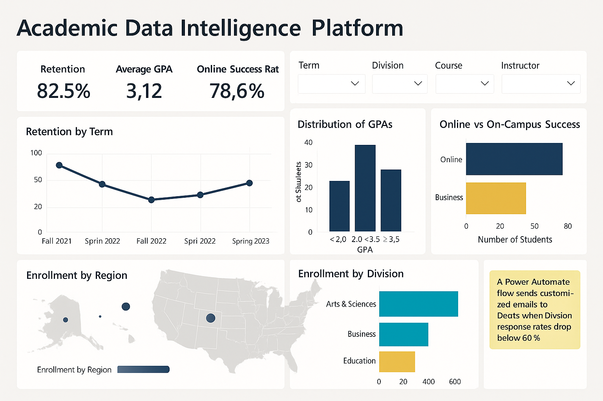

Academic Data Intelligence Platform (Full ETL + Power BI + Automation)
Division KPI tracking, response rates by modality, trend lines, and drill-through pages for deans.
Curious, practical, and committed to clear, reliable data. Experienced in Data Analytics, Data Science, and Business Intelligence with emphasis on institutional and healthcare datasets. I build clean data pipelines, intuitive dashboards, and decision-ready insights. Skilled in Power BI, SQL, Python, and cross-system integrations. I care about accuracy, transparency, and making data meaningful—not just visual. 2+ years of Experience in Healthcare Data Analysis; 3+ years of Experience in Data-Driven Qualitative and Quantitative Research.


• Serve as database specialist (RDBMS), administering and querying MS SQL Server.
• Delivered 800+ faculty-specific reports, data feeds, and Power BI dashboards for executive leadership.
• Configured and customized Ellucian CRM Recruit workflows for admissions, lead nurturing, and application lifecycle tracking.
• Built automated reporting workflows in Excel, SQL, and Python, reducing manual work by 60%.
• Engineered ServiceNow ↔ Banner data integrations through REST APIs, improving cross-system visibility.
• Supported interdisciplinary research involving longitudinal survey data and biological datasets.
• Built interactive visualizations using Python (Plotly, Seaborn, Matplotlib), R Shiny, and Power BI.
• Designed and enforced user-access models across 5 departments, ensuring FERPA & GDPR compliance.
• Created batch-processing pipelines cutting data cleaning and transformation time by 40%.
• Improved data-wrangling performance by 35% using R’s data.table.
• Analyzed 5TB+ healthcare and insurance datasets using high-performance computing clusters.
• Designed software solutions after analyzing system workflows, data processes, and user requirements.
• Investigated and resolved system issues following full SDLC standards.
• Produced technical documentation, flowcharts, and system architecture layouts.
• Assisted with installation and maintenance of Windows & Linux servers, improving stability and uptime.
• Provided Tier-1/2 IT support for hardware, software, and network issues.
• Monitored performance and security logs; escalated issues to senior sysadmins.
Division KPI tracking, response rates by modality, trend lines, and drill-through pages for deans.

Developed machine learning model to predict customer churn with 87% accuracy. Used logistic regression and random forest to identify behavioral drivers from CRM and transaction data.
Conducted a full Dynamics 365 data-model audit and restructured 60+ entity relationships to improve reporting efficiency. Integrated CRM with the alumni engagement portal using Power Automate and Azure Logic Apps, reducing duplicate data entry by 80%.

Full-stack web app that lets users explore thousands of jobs by skill, pay range, and location, and recommends skills to learn for target roles. Built RESTful APIs and a responsive React UI.
Designed an end-to-end ETL pipeline transforming raw Excel and SQL Server data into a clean Power BI model. Built KPIs including Monthly Revenue, YoY Growth, Conversion Rates, and Profit Margins using advanced DAX and real-time API integrations.
Operational KPIs, SLA health, alert tiles, and role-based views for clinicians and admins at IUhealth
Goal: Reduce outage minutes and improve day-ahead demand planning across service territories.
ETL highlights: Feature store keyed by (feeder_id, timestamp); windowed aggregates (1h/6h/24h); geospatial joins (buffers over spans) for vegetation/wind exposure; DQ rules for sensor freezes & clock drift.
Models: LightGBM/XGBoost with calibrated probabilities; LSTM when temporal effects dominate.
Features: prior outage density, wind gust forecast, soil moisture proxy, vegetation density, asset age, work-order backlog, lightning strikes.
Output: Prob. of outage per feeder (24–72h) + SHAP driver views.
Models: Hybrid stack — Prophet (calendar/seasonality) + GBM (weather/lag) + LSTM (sequence), blended.
Horizon: 15-min/60-min up to 24–48h Day-Ahead.
Pipelines: Airflow (hourly features, scoring), Spark joins; model registry; drift/calibration monitors.
Dashboards: Power BI reliability map (risk choropleth, SHAP drivers, vegetation hot-spots) & planning view (DA forecasts vs actuals, weather overlays, intervals).
Results (qual.): Top-decile feeder targeting captured a disproportionate share of next-day incidents; improved DA MAPE on extreme-weather/holiday regimes; faster restoration via pre-staging.
Ingestion → Bronze → Silver → Feature Store
↓ ↓
Weather/Lightning AMI/SCADA/Topology
↓ ↓
Train (GBM/LSTM/Prophet) → Registry
↓
Batch/Stream Inference
↓
Power BI + Alerts (ServiceNow/SMS) + Crew Exports
Next: quantile outage minutes, extreme-weather scenarios, DER-aware load, active learning triggers.
Goal: Benchmark methods for intermittent/lumpy spare-parts demand and pick the simplest model that works by pattern.
8 weekly series (~3.5y each): 4 industrial-like, 4 simulated (seasonal/trended/lumpy). Schema: date, demand.
RawData.RData & CleanedData.Rda.Methods (8): Naive, SES, Croston, SBA, TSB, Willemain (bootstrap gaps/sizes), MLP (nnet), LightGBM.
Eval: last 26 weeks holdout; metrics: sMAPE, MAE, MAPE → results_metrics.csv + Results.RData.
Findings: TSB/SBA dominate at high zero-share; LightGBM/MLP shine on trend/seasonality; Croston solid classic; practical router: if zero-share > 40% → TSB/SBA, else LightGBM/MLP.
# deps
install.packages(c("dplyr","readr","stringr","lubridate","forecast","nnet","Metrics","tsintermittent"))
# LightGBM install: https://lightgbm.readthedocs.io/
# from project root:
source("Cleaning_Description_Classification.R")
source("Methods.R") # writes results_metrics.csv + Results.RData
Scripts include intentionally informal hash-comments per brief.
Have a role or idea? I’m open to collaborations and interesting problems.